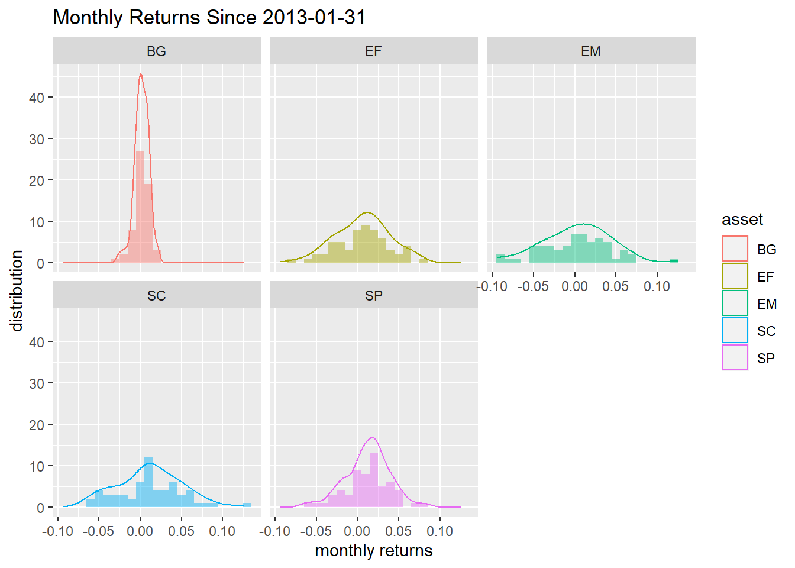
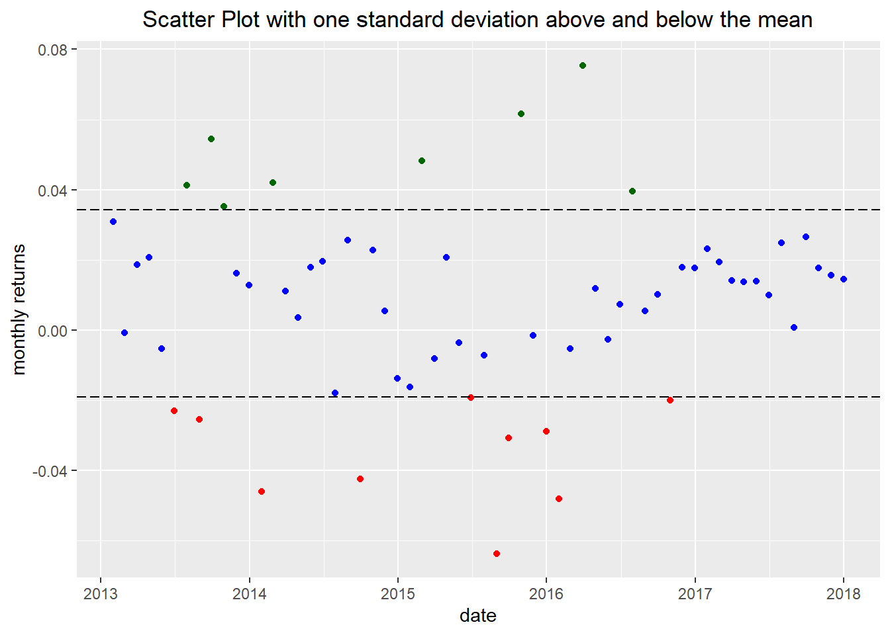
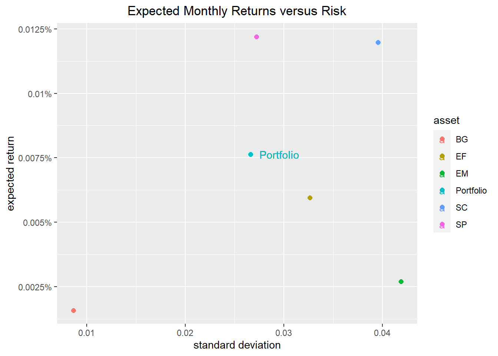
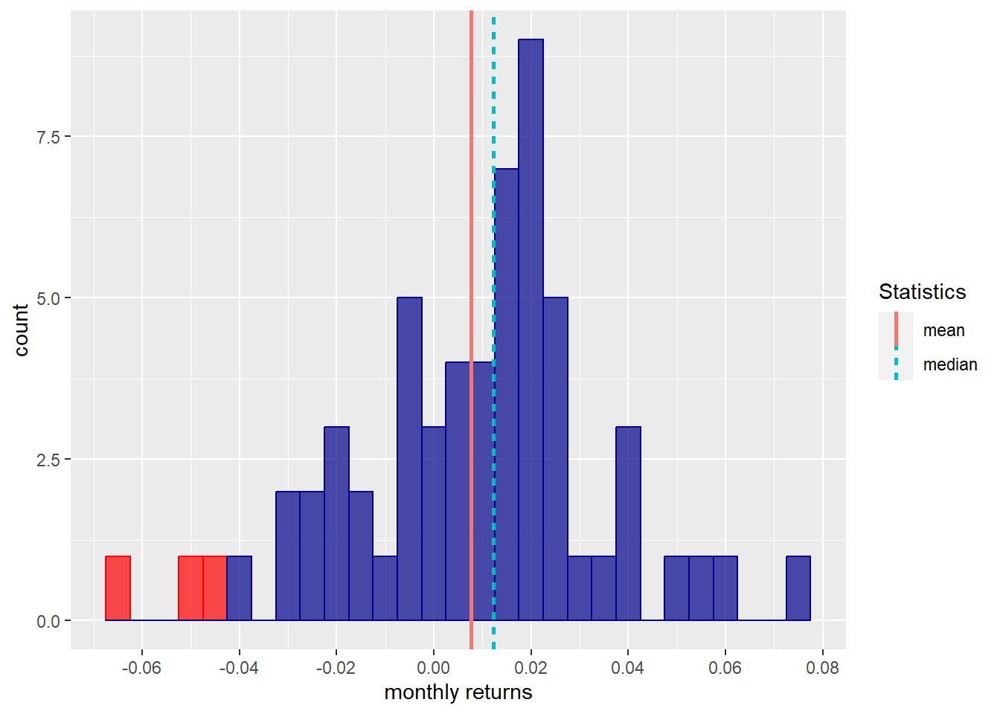

Portfolio Analysis
Context
Measure Portfolio risk using some descriptive statistics but yet very powerful to guide one’s analysis and give more insights about models to be used to explain the relationship between risk and return.
Assets Returns
We are taking raw price data for \(5\) individual assets in order to transform them into monthly returns for a signle portfolio. The portfolio consists of five Exchane Traded Funds (ETF):
- S \(\&\) P \(500\) ETF (SP) weighted \(25 \%\)
- A non-US equities ETF (EF) weighted \(25 \%\)
- A small-cap value ETF (SC) weighted \(20 \%\)
- An emerging-markets ETF (EM) weighted \(20 \%\)
- A bond ETF (BG) weighted \(10 \%\)
We are taking \(5\) years worth of data (the csv file containg data is called Data) from Yahoo Finance with the starting date “\(2012/12/31\)” and the ending date “\(2017/12/31\)”.
Code
# importing daily price data for the 5 ETF and save them to an xts object 'prices'.
symbols = c("SP","EF", "SC", "EM","BG")
prices = read_csv("C:\\Users\\HJasm\\OneDrive\\Bureau\\Projets\\Portfolio_analysis_r\\Data.csv",
col_types =
cols(date =
col_date(format = "%Y-%m-%d"))) %>%
tk_xts(date_var = date)
head(prices,10) SP EF SC EM BG
2012-12-31 128.3092 49.16410 75.06590 39.89233 98.19626
2013-01-02 131.5977 49.92501 77.12553 40.67489 98.08131
2013-01-03 131.3004 49.44080 77.02349 40.38705 97.83374
2013-01-04 131.8771 49.69155 77.62656 40.46800 97.93983
2013-01-07 131.5166 49.47539 77.17194 40.16218 97.88681
2013-01-08 131.1382 49.19869 76.87505 39.80238 97.97523
2013-01-09 131.4716 49.44944 77.09772 39.97328 97.90449
2013-01-10 132.5168 50.08064 77.19049 40.32409 97.89565
2013-01-11 132.5077 50.18440 77.13483 40.00026 97.99291
2013-01-14 132.4177 50.24492 77.11628 40.17117 98.08131Converting Daily Prices to Monthly Returns using the log method. We are using xts from the quantmod package as it does the conversion easily (we could use tidyverse also to do the same transformation). We decide to take the first observation in our data as the last trading day of the year.
Code
prices_monthly = to.monthly(prices,
indexAt = "lastof",
OHLC = FALSE)
asset_returns_xts =
Return.calculate(prices_monthly,
method = "log") %>%
na.omit()
head(asset_returns_xts, 10) SP EF SC EM BG
2013-01-31 0.04992297 0.03660636 0.052133434 -0.002935495 -0.006231517
2013-02-28 0.01267831 -0.01296938 0.016175220 -0.023105260 0.005891222
2013-03-31 0.03726793 0.01296938 0.040258083 -0.010235026 0.000984796
2013-04-30 0.01902996 0.04896776 0.001222613 0.012084966 0.009639339
2013-05-31 0.02333554 -0.03065561 0.041976308 -0.049483623 -0.020214051
2013-06-30 -0.01343450 -0.02715330 -0.001402980 -0.054739041 -0.015778190
2013-07-31 0.05038594 0.05186026 0.063541197 0.013159871 0.002687528
2013-08-31 -0.03045115 -0.01974619 -0.034743332 -0.025705602 -0.008297969
2013-09-30 0.03115574 0.07533845 0.063870562 0.069588712 0.011144078
2013-10-31 0.04526645 0.03208178 0.034234199 0.040861329 0.008291862A quick visualization in Figure 1 for the monthly log returns of each ETF.
Code
highchart(type = "stock") %>%
hc_title(text = "Monthly Log Returns") %>%
hc_add_series(asset_returns_xts[, symbols[1]],
name = symbols[1]) %>%
hc_add_series(asset_returns_xts[, symbols[2]],
name = symbols[2]) %>%
hc_add_series(asset_returns_xts[, symbols[3]],
name = symbols[3]) %>%
hc_add_series(asset_returns_xts[, symbols[4]],
name = symbols[4]) %>%
hc_add_series(asset_returns_xts[, symbols[5]],
name = symbols[5]) %>%
hc_add_theme(hc_theme_flat()) %>%
hc_navigator(enabled = FALSE) %>%
hc_scrollbar(enabled = FALSE) %>%
hc_exporting(enabled = TRUE) %>%
hc_legend(enabled = TRUE)Inspect each ETF with a histogram and density in Figure 2.
Code
asset_returns_tidyverse =
prices %>%
to.monthly(indexAt = "lastof", OHLC = FALSE) %>%
# convert the index to a date
data.frame(date = index(.)) %>%
remove_rownames() %>%
gather(asset, returns, -date) %>%
group_by(asset) %>%
mutate(returns = (log(returns) - log(lag(returns)))) %>%
spread(asset, returns) %>%
select(date, symbols) %>%
na.omit()
asset_returns_of =
asset_returns_tidyverse %>%
gather(asset, returns, -date)
# ggplot to visualize
asset_returns_of %>%
ggplot(aes(x = returns)) +
geom_density(aes(color = asset), alpha = 1) +
geom_histogram(aes(fill = asset), alpha = 0.45, binwidth = .01) +
guides(fill = FALSE) +
facet_wrap(~asset) +
ggtitle("Monthly Returns Since 2013-01-31") +
xlab("monthly returns") +
ylab("distribution") +
theme_update(plot.title = element_text(hjust = 0.5))
Risk Portfolio
In this section we are calculating some descriptive statistics as the main measure of portfolio risk. We are specifically interested in the dispersion of returns. We are considering the standard deviation that measures the extent to which a portfolio’s returns are dispersed around their mean (A risk or volatile profile has a high standard deviation) and the skewness and kurtosis to see how a portfolio’s returns are distributed. We are also taking a look at the rolling volatility to make sure we didn’t miss anything by considering only the total volatility.
We attribute the appropriate weight for each ETF to calculate the returns for one portfolio.
Code
# weights
w <- c(0.25, 0.25, 0.20, 0.20, 0.10)
# check if weights are attributed correctly to our ETF and check if the weights sum to 100%
#tibble(w, symbols)
#tibble(w, symbols) %>%
#summarise(total_weight = sum(w))
# use the weights to convert the returns of 5 assets to the returns of 1 portfolio
# we can change the parameter rebalance_on to years for annual rebalancing.
portfolio_returns_xts_monthly =
Return.portfolio(asset_returns_xts,
weights = w,
rebalance_on = "months") %>%
`colnames<-`("returns")
head(portfolio_returns_xts_monthly, 10) returns
2013-01-31 0.0308487678
2013-02-28 -0.0008696533
2013-03-31 0.0186624177
2013-04-30 0.0206248788
2013-05-31 -0.0053528837
2013-06-30 -0.0229531732
2013-07-31 0.0411705169
2013-08-31 -0.0254689186
2013-09-30 0.0544298113
2013-10-31 0.0351853479Code
highchart(type = "stock") %>%
hc_title(text = "Portfolio Monthly Returns") %>%
hc_add_series(portfolio_returns_xts_monthly$returns,
name = "Rebalanced Monthly",
color = "darkblue") %>%
hc_add_theme(hc_theme_flat()) %>%
hc_navigator(enabled = FALSE) %>%
hc_scrollbar(enabled = FALSE) %>%
hc_legend(enabled = TRUE) %>%
hc_exporting(enabled = TRUE)The Figure 4 shows that \(2015\) was the riskiest year. The \(\textcolor{red}{red}\) points represent the returns that are one standard deviation below the mean and the \(\textcolor{green}{green}\) points represent the ones above the mean. We see that we don’t have any monthly returns that are at least one standard deviation from the mean during \(2017\).
Scatter of returns
Code
portfolio_sd = round(StdDev(asset_returns_xts, weights = w)*100,2)[1,1]
# portfolio returns
portfolio_returns_tq_monthly =
asset_returns_of %>%
tq_portfolio(assets_col = asset,
returns_col = returns,
weights = w,
col_rename = "returns",
rebalance_on = "months")
# Viz of portfolio returns / scatter plot
sd_viz = sd(portfolio_returns_tq_monthly$returns)
mean_viz = mean(portfolio_returns_tq_monthly$returns)
portfolio_returns_tq_monthly %>%
mutate(hist_col_red =
if_else(returns < (mean_viz - sd_viz),
returns, as.numeric(NA)),
hist_col_green =
if_else(returns > (mean_viz + sd_viz),
returns, as.numeric(NA)),
hist_col_blue =
if_else(returns > (mean_viz - sd_viz) &
returns < (mean_viz + sd_viz),
returns, as.numeric(NA))) %>%
ggplot(aes(x = date)) +
geom_point(aes(y = hist_col_red),
color = "red") +
geom_point(aes(y = hist_col_green),
color = "#006600") +
geom_point(aes(y = hist_col_blue),
color = "blue") +
geom_hline(yintercept = (mean_viz + sd_viz),
color = "black",
linetype = "longdash") +
geom_hline(yintercept = (mean_viz-sd_viz),
color = "black",
linetype = "longdash") +
labs(title = "Scatter Plot with one standard deviation above and below the mean", y = "monthly returns") +
scale_x_date(breaks = pretty_breaks(n = 8)) +
theme(plot.title = element_text(hjust = 0.5))
Expected returns vs Risk
Here we are visualizing the expected mean returns in comparison with the standard deviation of monthly returns (risk profile). We can see that S \(\&\) P \(500\) has a higher expected return for a little more risk, EM and EF with high risk and low expected return, and finally SC with high risk but with high expected return.
Code
asset_returns_of %>%
group_by(asset) %>%
summarise(expected_return = mean(returns),
stand_dev = sd(returns)) %>%
add_row(asset = "Portfolio",
stand_dev =
sd(portfolio_returns_tq_monthly$returns),
expected_return =
mean(portfolio_returns_tq_monthly$returns)) %>%
ggplot(aes(x = stand_dev,
y = expected_return,
color = asset)) +
geom_point(size = 2) +
geom_text(
aes(x =
sd(portfolio_returns_tq_monthly$returns) * 1.11,
y =
mean(portfolio_returns_tq_monthly$returns),
label = "Portfolio")) +
ylab("expected return") +
xlab("standard deviation") +
ggtitle("Expected Monthly Returns versus Risk") +
scale_y_continuous(labels = function(x){ paste0(x, "%")}) +
theme_update(plot.title = element_text(hjust = 0.5))
Rolling Volatility
For better management of volatility, it is a good idea to take allok at rolling windows. We are considering a window of \(24\) months to see how the volatility has behaved over time in order to make better hypotheses about the past causes, future probabilities and rebalancing.
In Figure 4 during \(2017\) we had zero monthly returns that are lest one standard deviation from the mean which translates to low rolling volatility as the \(24\) month rolling portfolio volatility Figure 5 confirms, since we have a spike in rolling volatility in \(2016\) followed by a consist falling volatility through mid \(2017\).
Code
# window of 24 months
window = 24
portfolio_rolling_sd =
rollapply(portfolio_returns_xts_monthly,
FUN = sd,
width = window) %>%
na.omit() %>%
`colnames<-`("rolling_sd")
highchart(type = "stock") %>%
hc_title(text = "24-Month Rolling Volatility") %>%
hc_add_series(round(portfolio_rolling_sd, 4) * 100,
color = "darkblue") %>%
hc_add_theme(hc_theme_flat()) %>%
hc_yAxis(
labels = list(format = "{value}%"),
opposite = FALSE) %>%
hc_navigator(enabled = FALSE) %>%
hc_scrollbar(enabled = FALSE) %>%
hc_exporting(enabled= TRUE) %>%
hc_legend(enabled = TRUE)Returns Histogram
We have a negative skew distribution of monthly returns meaning multilple small positive returns and a few large negative returns. The \(\textcolor{red}{red}\) rectangles in Figure 6 represents the monthly returns that fall \(2\) standard deviations below the mean. One could be more conservative regarding the choice of threshold and depending on which returns one are interested in to. We can see that we have:
- One highly negative return less than \(-0.06\)
- One highly positive return greater than \(-0.06\)
- A cluster of negative returns around \(-0.02\)
Code
skew_xts = skewness(portfolio_returns_xts_monthly$returns)
mean_xts = mean(portfolio_returns_xts_monthly$returns)
median_xts = median(portfolio_returns_xts_monthly$returns)
some_stats = data.frame(Statistics = c("mean",
"median"),
value = c(mean_xts,
median_xts))
portfolio_returns_tq_monthly %>%
mutate(hist_col_red =
if_else(returns < (mean(returns) - 2*sd(returns)),
returns, as.numeric(NA)),
returns =
if_else(returns > (mean(returns) - 2*sd(returns)),
returns, as.numeric(NA))) %>%
ggplot(aes(returns)) +
geom_histogram(aes(x = hist_col_red),
alpha = .7,
binwidth = .005,
fill = "red",
color = "red") +
geom_histogram(aes(x = returns),
alpha = .7,
binwidth = .005,
fill = "darkblue",
color = "darkblue") +
#geom_density(col = "darkblue") +
geom_vline(data = some_stats, aes(xintercept = value,
linetype = Statistics,
col = Statistics), linewidth = 1)+
scale_x_continuous(breaks = pretty_breaks(n = 10)) +
xlab("monthly returns")
Rolling Skewness
Even if the overall skewness is negative as we have seen (Figure 6), the \(24\) month skewness in Figure 7 has been positive for about half the lifetime of the portfolio.
Code
window = 24
rolling_skew_xts = rollapply(portfolio_returns_xts_monthly,
FUN = skewness,
width = window) %>%
na.omit()
highchart(type = "stock") %>%
hc_title(text = "Rolling 24-Month Skewness") %>%
hc_add_series(rolling_skew_xts,
name = "Rolling skewness",
color = "darkblue") %>%
hc_yAxis(title = list(text = "skewness"),
opposite = FALSE,
max = 1,
min = -1) %>%
hc_navigator(enabled = FALSE) %>%
hc_scrollbar(enabled = FALSE) %>%
hc_add_theme(hc_theme_flat()) %>%
hc_exporting(enabled = TRUE)Since it will be the same work as we did in skewness for the returns visualization part, except now we are more interested in both tails. One could repeat the exact same code and marking or shading the tails at 2 standard deviations above and below the mean return. We are goin straight to the rolling Kurtosis.
One should keep in mind that the normal distribution has a kurtosis of \(3\), and a distribution with kurtosis less than \(3\) or greater than \(3\) means that we have fewer returns in the tails than the normal or we have more returns in the tails than the normal, respectively. This measure is important because more bad returns in the tails means that the portfolio might be at risk of a rare but huge downside event. The \(24\) month kurtosis in Figure 8 shows an increasing rolling kurtosis since \(2015\), the risk level increased at the end of the period exceeding three.
Code
kurt_xts = kurtosis(portfolio_returns_xts_monthly$returns)
window = 24
rolling_kurt_xts = rollapply (portfolio_returns_xts_monthly,
FUN = kurtosis,
width = window) %>%
na.omit()
highchart(type = "stock") %>%
hc_title(text = "Rolling 24-Month kurtosis") %>%
hc_add_series(rolling_kurt_xts,
name = "Rolling 24-Month kurtosis",
color = "darkblue") %>%
hc_yAxis(title = list(text = "kurtosis"),
opposite = FALSE) %>%
hc_add_theme(hc_theme_flat()) %>%
hc_navigator(enabled = FALSE) %>%
hc_scrollbar(enabled = FALSE) %>%
hc_exporting(enabled = TRUE)